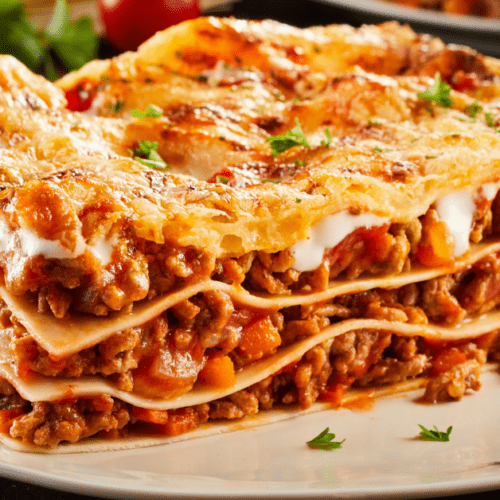

Lasagna Recipe

Description
This Barilla lasagna recipe is full of layers of delicious ground meat, marinara sauce, and ooey-gooey cheese. It’s the definition of decadence!
Having three different components, lasagna is not the easiest thing to make. But it only takes one whiff of this Italian masterpiece to know that it’s worth it.
Ingredients
- Lasagna Noodles
- Marinara Sauce
- Bulk Italian Sausage
- Ricotta
Steps
- 1. Preheat the oven to 375 degrees Fahrenheit.
- 2. Cook the noodles in boiling water for 4 minutes and drain with a colander. Run it through cold water to stop from further cooking. Set aside.
- 3. In a large saucepan, mix sausage or ground beef and 1 1/12 of the marinara sauce. Let it simmer for 5 minutes.
- 4. In a separate bowl, mix Ricotta, 3 1/2 cups of mozzarella, Parmigiano-Reggiano, and eggs.
- 5. Grease a lasagna pan or a 9×13-inch baking dish with cooking spray.
- 6. Spread a thin layer of the marinara sauce over the baking dish, about 3/4 cup. Layer 3 to 5 lasagna noodles over the sauce. The noodles should only overlap slightly with each other. Layer the cheese mixture of the noodles, followed by the meat sauce.
- 7. Repeat the layers starting from the noodles to the meat sauce twice. Top the meat sauce with the remaining marinara sauce and sprinkle with the remaining mozzarella cheese.
- 8. Cover the baking dish with foil and bake for 30 minutes. Remove the foil and cook for an additional 10 minutes.
- 9. Let the lasagna sit for 10 minutes before slicing and serving. Enjoy!